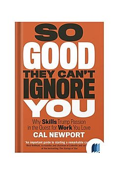

Library › Self-Improvement
So Good They Can't Ignore You — Summary & Key Lessons

Why 'follow your passion' is terrible advice — and what to do instead: build rare skills, then trade them for the dream job.
📖 OPEN THE FULL INTERACTIVE BREAKDOWN →🌐 Read it in Hindi, Hinglish, Gujarati, Tamil & 22 more languages — free, with audio.
💡 The Big Idea
'Follow your passion' is not just wrong — it's dangerous: most people don't have a pre-existing passion (studies find passions cluster in sports and arts, not careers), and passion-first thinking breeds chronic job-hopping and anxiety ('is THIS my calling?'). Newport's alternative, built from case studies of people who love their work: passion is the RESULT of mastery, not its cause. Adopt the CRAFTSMAN MINDSET — stop asking what the world can offer you, ask what you can offer the world — and build CAREER CAPITAL: rare and valuable skills, acquired through DELIBERATE PRACTICE (the stretch zone, with feedback — the thing that separates 20 years of experience from one year repeated 20 times). Then spend the capital on what actually makes work lovable: AUTONOMY (control over what you do and how — but beware the two control traps: seizing control without capital, and employers resisting exactly when you've earned it) and MISSION (a unifying purpose — found in the 'adjacent possible' at the cutting edge of a field, not on a vision board, and tested with LITTLE BETS). Working right trumps finding the right work.
🧠 The 4 Key Lessons
Lesson 1: The Passion Trap: Why 'Follow Your Passion' Fails
Rule #1: Don't Follow Your Passion
Three findings dismantle the mantra. First, career passions are RARE: in the study Newport cites, fewer than 4% of identified passions had anything to do with work (hockey, dance, reading led the list) — so 'match your job to your passion' is an equation with no input. Second, passion takes TIME: Amy Wrzesniewski's research on 'calling orientation' found the strongest predictor of seeing work as a calling wasn't the field — it was YEARS ON THE JOB; passion is a side effect of competence, autonomy, and relatedness (Self-Determination Theory's actual needs), all of which accrue with mastery. Third, passion-first thinking causes harm: the generation raised on 'do what you love' reports record job dissatisfaction and serial quitting — because when work feels hard (i.e., when skill is being built), the passion framework whispers 'this must not be your calling,' converting the universal experience of being new and bad at things into an identity crisis.
📖 Example: Steve Jobs — the mascot of 'do what you love' speeches — didn't follow passion into tech: at the time Apple started, Jobs was a barefoot spiritual seeker auditing calligraphy, more passionate about Zen than circuits; Apple began as a quick-cash scheme… Read the full example →
⚡ Do this: Retire the question 'what's my passion?' for 90 days. Replace it with: 'what valuable skill could I get noticeably better at this quarter?' Track skill progress, not feelings — and notice at day 90 whether the work got more interesting (it almost always does).
Lesson 2: Career Capital: Get Rare, Get Valuable
Rule #2: Be So Good They Can't Ignore You
Great jobs — creative, flexible, impactful, well-paid — are RARE and VALUABLE, so basic economics says you must offer something rare and valuable in return: career capital. The craftsman mindset generates it; the passion mindset squanders time evaluating instead of improving. Building capital requires knowing your market type: WINNER-TAKE-ALL markets reward one skill at world-class depth (screenwriting: only the script quality matters), while AUCTION markets reward a unique COMBINATION of skills (the blogger + biologist + speaker). Most people misdiagnose — grinding on credentials in a market that only pays for one thing, or over-specializing where combinations win. Capital compounds: each rare skill opens doors where the next rare skill is learnable, which is why the interesting careers look like lucky ladders in retrospect — each rung was purchased with the previous rung's capital, not with courage or vision boards.
📖 Example: Two guitar players, same age, same start: Jordan Tice and Mike Casey practice-logged by Newport — the difference wasn't hours but STRAIN: Tice's practice sessions were physically uncomfortable, attacking pieces just beyond reach with immediate feedback;… Read the full example →
⚡ Do this: Identify your market type (does your field pay for ONE thing at elite depth, or a rare combo?). Then define this quarter's capital project: one specific skill, a stretch target, and a feedback source that hurts a little. Log strain-hours, not work-hours.
Lesson 3: The Control Dividend — and Its Two Traps
Rule #3: Turn Down a Promotion
Control over what you do and how you do it is the single biggest lever for loving work — the dream behind every 'be my own boss' fantasy. But control has two traps. TRAP ONE: seizing control WITHOUT capital — quitting to freelance/start up before you have rare skills anyone will pay for; that's not courage, it's a slower path to moving back in with your parents (the lifestyle-design blogger whose only product is blogging about quitting). TRAP TWO: the moment you HAVE enough capital to claim control, your employer will fight you for it — promotions, raises, golden handcuffs — because you just became too valuable to let loose; resistance from others is, paradoxically, evidence you've earned the right to bet on yourself. The tie-breaker between traps is the LAW OF FINANCIAL VIABILITY: when deciding whether to pursue more control, ask 'will people PAY me for this?' — money here isn't greed; it's a neutral meter of real value. Do what people will pay for (not what they applaud) and the control is sustainable.
📖 Example: Newport's contrast pair: Ryan Voiland, who spent nearly a decade building elite horticulture capital before buying his farm — banks financed him, the farm thrived, and his 'quit the office for the land' story works because the land pays. Versus the sea of… Read the full example →
⚡ Do this: Before your next leap toward autonomy, run both trap-checks in writing: (1) What rare skill funds this bet, and what's the evidence people pay for it? (2) Is anyone resisting my leaving — and if nobody's fighting to keep me, what capital is still missing?
Lesson 4: Mission: Little Bets at the Adjacent Possible
Rule #4: Think Small, Act Big
A unifying mission ('use data science for public health,' 'make databases effortless') gives work meaning — but missions can't be chosen off a whiteboard. Scientific breakthroughs happen in the ADJACENT POSSIBLE: the space of ideas just beyond the current cutting edge, visible only to those standing AT the edge — which requires (again) career capital; the grand mission reveals itself to the expert, not the searcher. Once glimpsed, don't bet the house: advance with LITTLE BETS — small, month-scale projects with concrete feedback (a side project, a pilot, a paper) that probe the mission cheaply and generate the information big plans fake. And for a mission to spread, apply the REMARKABILITY test (Seth Godin's purple cow): the project must compel people to talk about it AND launch in a venue where such talk propagates (open source ships in communities; papers ship at conferences). Mission = capital first, then small probes, then remarkable strikes — the exact reverse of the vision-board order.
📖 Example: Pardis Sabeti, Newport's centerpiece: her celebrated mission — using computational genetics to fight ancient diseases in Africa — looks destined in retrospect. The actual sequence: a decade of unglamorous capital-building (medical degree, computational… Read the full example →
⚡ Do this: If you're mission-hungry: first honestly locate yourself relative to your field's cutting edge (capital gap = your real to-do list). If you're AT the edge: run one little bet per month — small project, hard deadline, public feedback — and after each, ask what mission just became slightly more visible.
✅ 5-Step Action Plan
- Swap the passion question for the skill question: what gets rarer and more valuable this quarter?
- Practice with strain and feedback — log stretch-hours, not busy-hours.
- Apply the financial-viability test before every autonomy bet: will people pay?
- Treat others' resistance to your independence as the signal you've earned it.
- Probe missions with monthly little bets from the edge of your field — never from the couch.
💬 Best Quotes from So Good They Can't Ignore You
- “Don't follow your passion; rather, let it follow you in your quest to become so good they can't ignore you.”
- “The craftsman mindset asks what you can offer the world; the passion mindset asks what the world can offer you.”
- “If you want a great job, you need something of great value to offer in return.”
Interactive version: mark lessons as read, listen in your language, share quote cards.